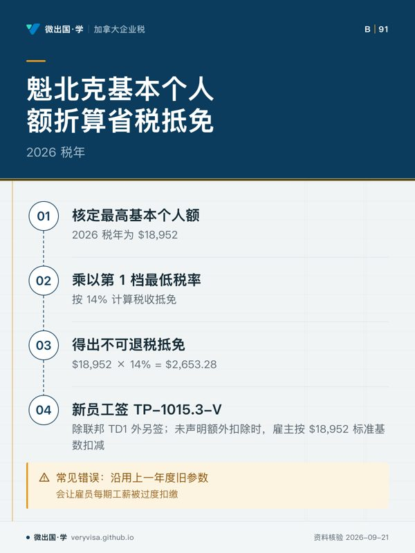
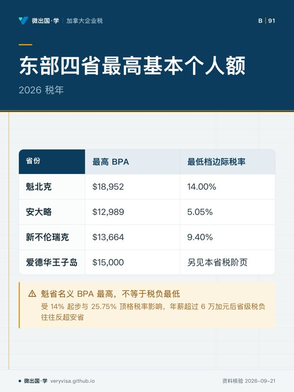
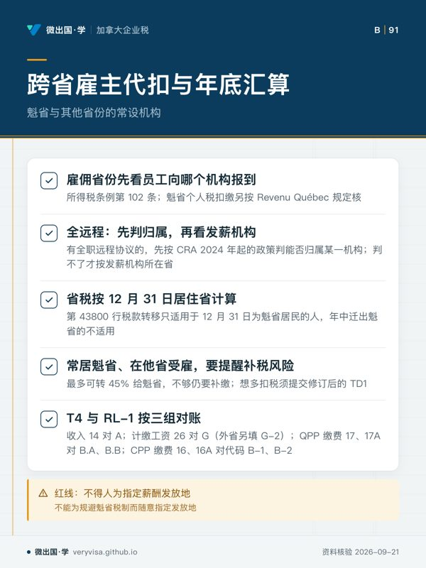

核实日期：2026-09-10｜本页适用口径：2026 税年加拿大跨省运营企业在魁北克省（Quebec, QC）设立常设机构（PE）、派驻技术高管或实行跨省远程用工时的薪酬代扣代缴（Payroll Withholding）、魁北克税务局（Revenu Québec）独立四档个人税阶与基本个人额（BPA）核算，以及安大略省（ON）、新不伦瑞克省（NB）与爱德华王子岛省（PEI）基本个人额跨省比对协同控制。下一次复核：2027-01-31；各省财政厅发布新年度指数化参数时提前复核。本文涉及金额除特别注明外均为加元。
在加拿大联邦与各省的税收体制中，魁北克省（Quebec）拥有完全独立于加拿大联邦税务局（CRA）的自主税收征管系统。对于在全国开展经营的跨省企业、加拿大控股私营公司（CCPC）以及全国连锁集团而言，薪酬核算部门面临的最复杂工薪税挑战便是跨越渥太华河两岸的用工税控分流。在除魁北克以外的九个省和三个地区，联邦 CRA 统一代收联邦税与省级个人所得税，雇主仅需向 CRA 申请单一工薪扣缴账户（RP 账户），并在年终出具统一的 T4 表格；然而，一旦企业在魁北克省拥有常设机构（Permanent Establishment），或者雇佣了在魁北克省提供劳务或居住在魁省的员工，企业便必须建立双轨制薪酬代扣通道。
这一双轨制要求企业在遵循联邦 ITA 规范的同时，必须严格按照魁北克省税法典履行向魁北克税务局（Revenu Québec）的登记、月度税款汇缴以及年终出具 Relevé 1（RL-1）税表的法定责任。在此过程中，准确掌握魁北克省特有的个人所得税阶梯分布、基本个人额计算口径，并将其与周边安大略省、大西洋板块新不伦瑞克省及爱德华王子岛省的免税基数进行动态比对，是跨省企业防范合规惩罚、优化高管薪酬结构及稳定跨省派驻团队的核心基础。
一、魁北克省独立个人所得税四档税阶与 2026 税年核心参数
魁北克省没有采纳联邦代征的模式，而是自主设立了一套高度累进的四档个人税率机制。魁北克居民在向联邦申报 T1 时享受 16.5% 的魁省特别联邦税减让（Federal Abatement），但与此同时，在省级层面必须向 Revenu Québec 单独提交 TP-1 税表，适用独立的四档税阶。

根据 Revenu Québec 官方核准并在 2026 税年正式生效的法定累进参数，魁北克省个人所得税的具体税阶分档与边际税率标准如下：
- 第 1 税阶：
- 2026 税年应税收入上限为 $54,345。
- 对应适用的法定边际税率为 14.00%。在这一基础收入区间内，基层员工与技术初级岗位适用较为温和的省级税率，企业雇主在按照 TP-1015.3-V 指南预扣魁省所得税时，以此税率作为第一层级折算起点。
- 第 2 税阶：
- 2026 税年应税收入区间为超过 $54,345 至 $108,680。
- 对应适用的法定边际税率为 19.00%。该税阶涵盖了绝大多数中级工程技术人员与基层管理主管。跨越 $54,345 门槛后，税率直接跳升 5 个百分点，雇主在计算中端员工年终奖金或加班薪酬时，必须及时调整代扣系数以避免年终补税缺口。
- 第 3 税阶：
- 2026 税年应税收入区间为超过 $108,680 至 $132,245。
- 对应适用的法定边际税率为 24.00%。该区间为中高收入缓冲档，税率再次提升 5 个百分点，涉及部门总监与核心业务骨干的薪酬核算。
- 第 4 税阶：
- 2026 税年应税收入超过 $132,245 的所有所得部分。
- 对应适用的法定最高顶格边际税率为 25.75%。对于企业高级管理层、控股股东及跨国派驻总监，当其薪酬与应税分红超过 $132,245 时，每增加 1 加元的应税所得均需全额按 25.75% 计提魁省个人税。
这四档清晰分明的税阶结构构成魁北克省雇主源泉代扣税算法的基础。企业工薪系统必须将联邦代扣表（PDOC）与 Revenu Québec 发布的月度源泉代扣指南（TP-1015.F）进行底层联动，确保双重扣税精准无误。
二、魁北克最高基本个人额（BPA）及其省税抵免机制
除了累进税阶外，魁北克税制中的免税基础与其它各省存在显著的法律构成差异。在魁北克省，纳税人享有的基本个人免税额（Montant personnel de base）直接映射到其省级不可退税税收抵免之中。
- 魁北克最高基本个人额：在 2026 税年，魁北克法定最高基本个人额参数正式核定为 $18,952。
- 不可退税税收抵免折算机制：魁北克省将纳税人的基本个人额乘以其第 1 税阶的最低法定税率（14%）计算税收抵免额。在 2026 税年，该项基本个人抵免为纳税人带来直接的省税减免： $$ \text{省级不可退税抵免} = \$18,952 \times 14\% = \$2,653.28 $$
- 表单申报与代扣协同控制：当企业在魁北克招聘新员工时，除了要求其签署联邦 TD1 表格之外，必须要求其签署魁北克法定的 TP-1015.3-V（源泉扣缴扣除申报表）。如果雇员未在表格中声明额外的配偶抵免或受抚养人扣除，雇主财务系统在计算省税代扣时，将默认按照 2026 税年的标准基数 $18,952 进行源泉扣减。企业必须严格监控这一参数的年度更新，若仍沿用上一年度的旧参数，将导致雇员每期工薪被过度扣缴，从而挤压员工当期可支配收入。
三、东部各省基本个人额参数比对：安省、新不伦瑞克与爱德华王子岛
对于在加拿大东部经济圈设立多个运营中心的企业而言，由于雇员经常在安大略省、魁北克省及大西洋沿岸省份之间跨省流动、远程办公或内部调岗，薪酬税务团队必须熟练掌握各省基本个人免税额（BPA）的法定差异，从而准确评估跨省派驻产生的净薪酬摩擦成本。
在 2026 税年中，核心对比省份的最高基本个人额呈现出明显的差异化特征：
- 安大略省（Ontario, ON -）：
- 2026 税年法定最高基本个人额为 $12,989。
- 安省基本个人额显著低于魁北克省的 $18,952。安大略省对省内基本免税基数执行年度通胀指数化微调，由于其底层最低档边际税率为 5.05%，其折算的省级基本免税额仅为约 $655.94（未计健康税及附加税附加调整）。从安省调往魁省的高管，往往会直观感受到魁省名义基本个人额较高，但受制于魁省 14% 的第一档起步税率与 25.75% 的顶格税率，其实际省级个税负担在年薪超过 6 万加元后迅速反超安省。
- 新不伦瑞克省（New Brunswick, NB -）：
- 2026 税年法定最高基本个人额为 $13,664。
- 作为与魁北克省接壤的大西洋省份，新不伦瑞克省拥有庞大的跨省双语劳动力池。NB 省 2026 税年 $13,664 的基本个人额适度高于安省，其最低税阶税率为 9.40%。企业在开展蒙克顿与蒙特利尔之间的跨省人才调配时，必须清楚 NB 雇员享受的省税基础与魁省不同，工薪系统需在系统底层依据雇员纳税省份实施分流计税。
- 爱德华王子岛省（Prince Edward Island, PE -）：
- 2026 税年法定最高基本个人额正式确定为 $15,000。
- 爱德华王子岛近年来通过一系列省级税制改革，大幅度提升了底层劳动者的基本免税门槛。在 2026 税年中，PEI 将其最高基本个人额一举提升至 $15,000 整，显著缩小了与魁北克省之间的免税额差距。在爱德华王子岛设立农业加工、信息外包或旅游分支的企业，必须按 $15,000 新门槛核定员工省级 TD1-PE 表格，确保精准抵扣。
四、跨省多常设机构雇主源泉代扣与年底汇算合规控制
跨省企业在管理跨越魁省、安省、NB 省及 PEI 的雇佣关系时，极易陷入源泉扣缴管辖权认定（Province of Employment）与最终纳税义务管辖权（Province of Residence）的错位陷阱。为确保税务合规，企业薪酬与内控部门应建立三项核心机制：
- 雇佣省份（POE）的判定准则：
- 联邦扣缴按所得税条例第 102 条，看雇员向雇主哪一处机构报到工作（reports for work），以此定雇佣省份（POE）。雇佣省份是魁北克的，不论员工住在哪省，雇主都要扣 QPP（代替 CPP）并扣 QPIP；魁省个人税的扣缴另按 Revenu Québec 的规定执行，本页未取得其原文，操作前须另核；
- 员工从不到任何雇主机构坐班时，先看是否订有全职远程工作协议。订有的，按 CRA 自 2024 年 1 月 1 日起的远程工作行政政策，先判断员工能否合理视为归属（attached）某一雇主机构，能判定的，雇佣省份就是该机构所在省。没有全职远程协议或判定不了归属的，才按支付其薪酬的雇主机构所在省认定，一般是薪资部门或薪资记录所在地，或在 T2 申报中实际承担这笔费用的机构。企业不得为了规避魁省税制而随意人为指定发放地。
- 12 月 31 日居住省份汇算调整机制：
- 个人省税按 12 月 31 日的居住省份计算。若一名核心架构师全年在魁北克分支机构打卡并由企业代扣魁省税款，但于 12 月 15 日正式搬迁定居安省（或 NB、PEI），当年按安省居民申报；已代扣的魁省税款怎样处理，要按 Revenu Québec 的规定另核。CRA 联邦申报第 43800 行的税款转移只适用于 12 月 31 日为魁省居民的人，不适用于这种迁出情形；
- 反之，若员工 12 月 31 日为魁省居民而在安省常设机构受雇，企业按安省标准扣缴联邦与安省税。员工可在联邦申报第 43800 行把魁省以外代扣税款的最多 45% 转给魁省，并在魁省 TP-1 第 454 行申报同一金额；转移额不足以覆盖魁省税时，申报 TP-1 仍要补缴。想在年内多扣税的，按 CRA 规定须提交修订后的 TD1 表；TD1-IN 是《印第安人法》下的就业所得免税判定表，与加扣无关。
- 年终 T4 与 RL-1 的跨省核销对账：
- 具有魁省常设机构的雇主在每年 2 月底前必须分别向 CRA 发送 T4 XML 包，向 Revenu Québec 发送 RL-1 数据文件。企业财会要把收入、计缴工资和缴费额分三组核对，不能跨组配对：① 收入：T4 第 14 栏（雇佣收入）对 RL-1 的 A 栏（雇佣收入）；② 计缴工资：T4 第 26 栏（CPP/QPP 计缴工资）对 RL-1 的 G 栏（QPP 计缴工资）；员工在魁省以外的省份工作的，RL-1 还要以代码 G-2 填 T4 第 26 栏里的 CPP 计缴收入；③ 缴费额：QPP 缴费是 T4 第 17、17A 栏，对 RL-1 的 B.A、B.B 栏（QPP 缴费与第二附加缴费）；CPP 缴费是 T4 第 16、16A 栏，在 RL-1 以代码 B-1、B-2 填。T4 第 16、17 栏是缴费额，不能直接拿去对 RL-1 G 栏的工资额。（CRA T4 说明页；Revenu Québec RL-1 填报指南 RL-1.G-V，2024-10 版）
通过系统掌握魁省四档税阶（14% 至 25.75%）、最高基本个人额 $18,952，并与安省（$12,989）、新不伦瑞克（$13,664）及爱德华王子岛（$15,000）保持动态参数同步，跨省运营企业方能在保障员工合法净所得的同时，构建起经得起联邦与魁省双重审计的用工薪酬内控防线。
本页知识卡
不看正文也能拿到这一节的核心内容：先看导读，再看图。点图放大，左右翻页。
- 先看看跳升幅度：前两次各升 5 个百分点，最后一次只升 1.75。
- 易漏联邦减让不等于魁省税率，两张税表各算各的。
- 下一步去讲解页看魁省基本个人额如何折算抵免。

- 先看先看抵免怎么算：基数乘最低档税率。
- 易漏雇主系统每年要更新参数，否则员工被多扣。
- 下一步去讲解页对照东部其他省的基本个人额。

- 先看横着看两栏：免税额高低要配合起步税率一起看。
- 易漏跨省调岗时，员工省级税负要按纳税省份分流计算。
- 下一步去讲解页看跨省雇主的源泉代扣规则。

- 先看扣税的省和最后结算的省，可能不是同一个。
- 易漏TD1-IN 是《印第安人法》免税判定表，不是加扣表。
- 下一步去讲解页看四档税阶与各省免税额。